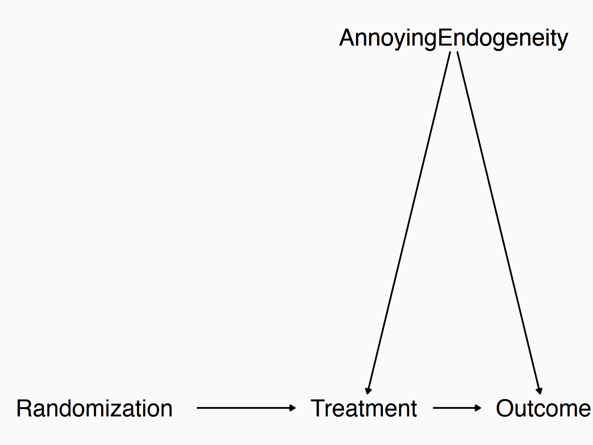

🗓️ Week 10
Instrumental Variables
PB4A7- Quantitative Applications for Behavioural Science
03 Dec 2024
Check-in
- We’ve been talking about within variation and RDD, which are ways of controlling for stuff (and so solving endogeneity problems) without having to control for everything on all the back door paths
- They do this by finding a point in the running variable at which only the treatment changes (RDD) or finding a situation where nothing important changes over time (fixed effects)
- What if, instead of closing back doors by controlling for stuff (between variation), we instead isolated just the exogenous part of the treatment?
Isolating Front Doors
The idea is:
- Treatment varies for all sorts of reasons
- Many of those reasons are endogenous. If you get treatment because you’re really rich, that wealth is likely going to be related to whatever outcome
- Some reasons are exogenous. If you get treatment because it was accidentally given to you at random, that’s unrelated to outcome
Isolating Front Doors
- Those exogenous reasons for treatment we can call instruments and we can perform instrumental variables analysis (IV)
- If we use just the part of treatment driven by the instruments, then that part of treatment is exogenous and we can ignore all the back doors! We’ve identified a causal effect
Experiments
- If this sounds strange or implausible to you, we have an existing example ready to go
- Randomized experiments are conceptually very similar to the use of instruments
- Many endogenous reasons why people might get treatment. But the experiment’s randomization is an exogenous reason
Experiments
Experiments
The only difference between a randomized experiment and an instrument is that in randomized experiments, we control and impose the randomization
In the case of instruments we must find that exogenous variation in treatment in the world
ie what about a natural disaster. An earthquake? Extreme rain?
Natural Experiments
- That’s why these are often referred to as “natural experiments” (although this is a broader term - DID and regression discontinuity are types of natural experiments too)
- That’s our goal though!
- Find a source of exogenous variation in treatment
- Isolate just the part of treatment driven by that exogenous variation
- Look at the relationship between that part of treatment and the outcome
- You’ve identified the effect!
Intuitively
- This is sort of like the opposite of controlling for \(Z\)
- We look for what part of \(X1\) is explained by \(Z\)
- But instead of removing that variation by controlling for \(Z\)…
- We keep that variation, and remove all other variation in \(X1\)
Concept Checks
- Why is it important to partition the sources of variation in treatment into exogenous and endogenous? Why not do that with the outcome instead?
- What does it mean to say that we treat an instrument like the opposite of a control variable, and how do we do that?
- In the animation on the previous slide, why does it draw a straight line between the two points and measure its slope? What does that give us?
Relevance and Validity
For this to work, we need two things to hold:
- Relevance: the instrument must be a strong predictor of the treatment. It can’t be trivial or unimportant (or else what variation are you really isolating? You’ve got nothing to go on!)
- Validity: the instrument must actually be exogenous! (Or at least exogenous after adding controls). The endogeniety problem doesn’t go away with IV, it’s just shifted from the treatment variable to the instrument
Now, let’s keep these assumptions in mind as we move, and think about how we can actually carry this out
Two Stage Least Squares
So our goal is to: (1) use the instrument to predict treatment, and then (2) use that predicted treatment to predict the outcome!
We need a separate equation for each of those steps
“First stage”: predict treatment \(X_1\) with the instrument \(Z\), perhaps also a control \(X_2\).
\[X_1 = \gamma_0 + \gamma_1Z + \gamma_2X_2 + \nu\]
Then, use that equation to predict \(X_1\), getting \(\hat{X_1}\). Then, use those predictions to predict \(Y\) in the “second stage”
\[Y = \beta_0 + \beta_1\hat{X_1} + \beta_2X_2 + \varepsilon\]
Two Stage Least Squares
- In general we don’t actually carry out this process ourselves because it will get the standard errors wrong (they need to be adjusted for the fact that \(\hat{X}_1\) is estimated)
- But this shows what we’re doing - we’re isolating just the variation in treatment that is explained by the instrument
- \(\hat{X}_1\) contains only variation driven by \(Z\)
- So if \(Z\) is exogenous after controlling for \(X_2\), then so is \(\hat{X}_1\)
- And \(\hat{\beta}_1\) will be identified
R
We can do this in R by hand (although as mentioned, the SEs will be wrong)
R
There are a bunch of ways to do it properly in R. The classic is ivreg in the AER package, but other functions are more fully-featured, including robust SEs, clustering, and fixed effects if you want them. felm in lfe, tsls in sem, a number of things in ivpack
We’ll be using good ol’ feols from fixest
R
If we actually want to look at that first stage, we can extract that
Concept Checks
- Why do you think that doing 2SLS by hand would make the standard errors be wrong?
- Intuitively, why would using Z-predicted values of X in predicting Y give us the causal effect if Z is a valid instrument?
- Why do we include the control variables in both the first and second stages?
The Good and the Bad
What is good and bad about this whole process?
The Good:
- Causal identification! & Fairly easy to do
- Intuitive - just like a randomized experiment, but in the wild
The Bad (we’ll go into these in detail)
- Monotonicity
- Small-sample bias
- Instruments can’t be weak
- Good and believable instruments are really hard to find
The Local Average Treatment Effect
- IV only allows variation in the treatment that is driven by the instrument
- This also means that we can only see the effect among people for whom the instrument drives their treatment
- If a treatment improves your outcome by 2, but my outcome by only 1, and the instrument has a big effect on whether you get treatment, but only a little effect on me, then our IV estimate will be a lot closer to 2 than to 1
- This is a “local average treatment effect” - our estimate is local to people who are affected by the instrument (and even more local to those affected more heavily than others)
The Local Average Treatment Effect
- So?
- This does mean that the IV estimate won’t be representative of everyone’s effect
- Or even of the people who actually were treated
- It might be less informative about what would happen if we treated more people than if we did an actual experiment
- But we might have to live with that to be able to use the cleaner identification
Monotonicity
- Also, think about that - we weight people by how strongly they’re affected by the instrument
- What if someone is affected by the instrument in an opposite direction to everyone else? This would be a violation of monotonicity
- Then, they would get a negative weight and our estimate doesn’t make much sense any more!
- So we need to assume that everyone is either unaffected by the instrument, or affected in the exact same direction as everyone else
Monotonicity
- When might this not be true? For example, say we’re using rainfall as an instrument for agricultural productivity
- Rain might help in dry areas, but make things worse in already-too-wet areas. The instrument would help productivity some places and hurt it in others
Small-sample Bias
- IV is actually a biased estimator!
- The mean of its sampling distribution is not the population parameter!
- Or rather, it would be the population parameter at infinite sample size, but we don’t have that
- In small samples, the bias of IV is
\[\frac{corr(Z,\varepsilon)}{corr(Z,X_1)}\frac{\sigma_\varepsilon}{\sigma_{X_1}}\]
Small-sample bias
- If \(Z\) is valid, then in infinite samples \(corr(Z,\varepsilon)=0\) and this goes away. But in a non-infinite sample, it will be nonzero by chance, inducing some bias. The smaller the sample, the more likely we are to get a large value by random chance
- The bias is smaller the stronger the relationship between \(Z\) and \(X_1\), the smaller the sum of squared errors, and the bigger the variation in \(X_1\)
Weak Instruments
- This means we probably shouldn’t be using IV in small samples
- This also means that it’s really important that \(corr(Z,X_1)\) isn’t small!
- If \(Z\) has only a trivial effect on \(X_1\), then it’s not relevant - even if it’s truly exogenous, it doesn’t matter because there’s no variation in \(X_1\) we can isolate with it
- And our small-sample bias will be big! (imagine the term in the previous slide if \(corr(Z,X_1) = .00001\) !)
Weak Instruments
- There are some rules of thumb for how strong an instrument must be to be counted as “not weak”
- A t-statistic above 3, or an F statistic from a joint test of the instruments that is 10 or above
- These rules of thumb aren’t great - selecting a model on the basis of significance naturally biases your results. But people do use them a lot so you should be aware
- What you really want is to know the population effect of \(Z\) on \(X1\) - you want the F-statistic from that to be 10+. Of course we don’t actually know that.
Weak Instruments
- Whatever we feel about the rules-of-thumb, they’re quite common
- So much so that you get it by default when looking at
feols()IV output
TSLS estimation - Dep. Var.: Y
Endo. : X1
Instr. : Z
Second stage: Dep. Var.: Y
Observations: 200
Standard-errors: Heteroskedasticity-robust
Estimate Std. Error t value Pr(>|t|)
(Intercept) 3.697702 0.166064 22.266665 < 2.2e-16 ***
fit_X1 0.553733 0.392039 1.412446 0.15940
X2 -0.022595 0.152040 -0.148612 0.88201
---
Signif. codes: 0 '***' 0.001 '**' 0.01 '*' 0.05 '.' 0.1 ' ' 1
RMSE: 1.94425 Adj. R2: -0.019456
F-test (1st stage), X1: stat = 346.4 , p < 2.2e-16 , on 1 and 197 DoF.
Wu-Hausman: stat = 3.61357, p = 0.058777, on 1 and 196 DoF.- 346.43 is way above 10! We’re probably fine in this particular regression
Instruments and Caution
- Good IVs are really hard to find
- Claiming the IV is exogenous (even after adding controls) is the same difficult problem when we’re doing it for the IV as when we’re doing it for the treatment
- We’ve just shifted the claim to a variable it’s more likely to be true for
- And this is social science, where everything is related to everything else. So why isn’t your instrument part of that?
Instruments and Caution - Rainfall
- For a long time, developmental economists would use rainfall as an instrument for agricultural productivity
- Controlling for location, variation the exact amount of rainfall from year to year is basically random, right?
- Making it a good instrument so we can see the effect of agricultural productivity on other stuff
- Except that rainfall also affects all other sorts of stuff (like what kind of transportation people take)
- Also the monotonicity thing we talked about
- And my rainfall is correlated with my neighbor’s rainfall
- Also, wait a minute… other people use rainfall as an instrument for warfare!
Instruments and Caution
- So rainfall isn’t seen as a great instrument any more
- In fact, lots of clever instruments that used to be thought of as good aren’t acceptable now due to similar problems - parental education as an instrument for your own, distance-you-live-from-a-college as an instrument on going-to-college, quarter of birth on education…
- No wonder we’re so skeptical of cool-looking instruments now!
Instruments and Caution
- Acceptable instruments these days fall into one of a few categories:
- Actual literal randomization (like in a randomized experiment with imperfect compliance - see the Experiments module. Or similarly, fuzzy regression discontinuity - see the Regression Discontinuity module)
- Variables that are truly from outside the system and unrelated to anything social-sciency, like mistakes or computer glitches (for example, job interview scores for teachers were added incorrectly, as an instrument for progressing through the interview - Goldhaber, Grout, & Huntington-Klein 2017)
Instruments and Caution
- Variables you’d be really surprised to find out are relevant but just happen to be - and when you look into it there’s a good reason it’s relevant
- If you want to do IV, learn a lot a lot a lot of context so you can know really well how the IV fits into the data-generating process. You should be an expert on the topic you’re using IV in. Otherwise, how can you know it’s valid?
Concept Checks
- Give an example where a local average treatment effect might give a very different answer from the average treatment effect
- Why will a violation of monotonicity make our estimate meaningless? Hint: think about the local average treatment effect
- Why would it be a problem for validity if the same instrument can be used for multiple different treatments?
- Why would we be suspicious of any instrument that “makes sense” as a determinant of treatment?
Other Things about IV
- Ok, enough of the scare tactics! Just be very aware of these problems
- What other neat things can we do with IV?
Well,
- We can use multiple instruments, not just one
- (We could have multiple endogenous variables too, but we won’t cover that right now)
- We can use IV to solve measurement issues rather than endogeneity issues
- We can use IV to break simultaneous causality
Overidentification Tests
- “Overidentification” just means we have more identifying conditions (validity assumptions) than we actually need. We only need one instrument, but we have two! (or more)
- So we can compare what we get using each instrument individually
- If we assume that at least one of them is valid, and they both produce similar results, then that’s evidence that both are valid
- Like using one clock to set the time on another clock
- If they’re dissimilar, then one of them is likely invalid, but we don’t know which one - we just know they’re different
- (also maybe they’re just producing different local average treatment effects, but let’s not use that copout!)
veridentification Tests
- We can do this using
fitstat()in fixest
# Create data where Z1 is valid and Z2 is invalid
df <- tibble(Z1 = rnorm(1000), Z2 = rnorm(1000)) %>%
mutate(X = Z1 + Z2 + rnorm(1000)) %>%
# True effect is 1
mutate(Y = X + Z2 + rnorm(1000))
iv <- feols(Y~ 1 | X ~ Z1 + Z2, data = df, se = 'hetero')
fitstat(iv, 'sargan')Sargan: stat = 267.8, p < 2.2e-16, on 1 DoF.- That’s a small p-value! We can reject that the results are similar for each IV, telling us that one is endogenous (although without seeing the actual data generating process we couldn’t guess if it were \(Z1\) or \(Z2\) )
Overidentification Tests
- And how different are they? What did the test see that it was comparing? (Notice the first model gives an accurate coefficient of 1)

PB4A7- Quantitative Applications for Behavioural Science